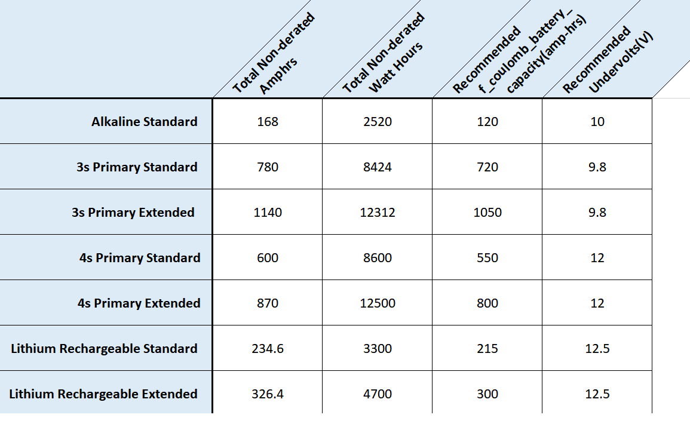
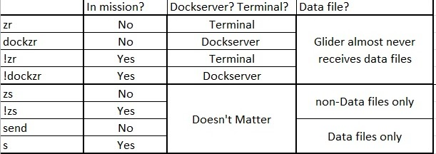
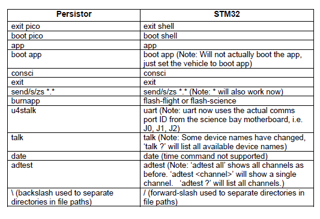

Glider Lab
This page contains various procedures and resources for glider lab members, including ESD standard operating procedures, manuals, and piloting tools.
Gliders and Mooring Google Calendar
Standard Operating Procedures
Glider Prep, Testing, & Checkouts
Glider Checkout Procedure The steps needed to prepare a glider for deployment.
Functional Checkout Procedure - From the datahost
How to upgrade the glider operating system
How to work on a glider while it is open
Sensor Settings and Sampling Sheet - Where mission planners input the settings for sensors and how they should sample.
Ballast sheet from Rutgers - Ballast sheet developed by Rutgers
TWR Ballast sheet - From the datahost
Deployment, Piloting, & SFMC
Sensor SOPs
How to calibrate the compass on the glider
How to calibrate the shadowgraph
How to talk to the camera (shadowgraph or glidercam)
How to set up the Nortek compact echosounder
Data Offload
How to use the high speed data cable
How to offload PAM Data (link to pam webpages?)
Manuals
Online Calculators
Sea Water Density - Calculate sea water density and sound speed
Shadowgraph Power Calculator (something Caleb mentioned was in the works)
Calculators for Active Acoustics
Sound Absorption - Calculate Absorption using the Francois and Garrison, 1982 method.
Standard Sphere Target Strength - Standard sphere target strength calculator created by Advanced Survey Technologies, SWFSC.
Useful Links
Slocum Gliders
Pilot Cheatsheet - Common commands for piloting and testing
Slocum Fleet Mission Control - SFMC from Teledyne. Where to pilot the gliders using Iridium.
Argos - Check where the gliders are if they miss a call in.
Datahost - The TWR forum. It has the firmware builds for the gliders, Masterdata for the different firmware, TWR glider sheets, such as, Ballast, Functional Checkout, etc. Most forms are in Resources.
Masterdata - A list of masterdata for all the various operating systems of Slocum gliders.
Masterdata 8.6 Masterdata 11.0 Masterdata 11.01 Masterdata 11.04 Masterdata 11.05
Teledyne Customer Portal - Where to check the status of service on gliders and glider parts at TWR.
Default SFMC Group Call In - Check here to see if the glider is calling into the default group instead of our SFMC.
Freewave and Argos numbers - Freewave and Argos numbers for each Slocum glider.
ECOpuck coefficients - Coefficients for the ECOpuck needed to be put in autoexec.mi
Environmental Data Viewers
SIO Del Mar Buoy - Water properties used for deployments off of San Diego.
OceanGNS - A program that can track multiple gliders as well as has different layers. The layers can be depth average currents, sea ice, chlorophyll, etc.
General Glider Resources
Underwater Glider User Group ‘UG2’
Lab Resources
Glider Specific Information
Slocum Gliders
Battery Capacities

File Transfer Syntax

Differences between persistor and STM gliders

Aborts & Errors
Oceanscout
Information
Hefring cloud- The NOAA cloud interface for controlling Oceanscouts.